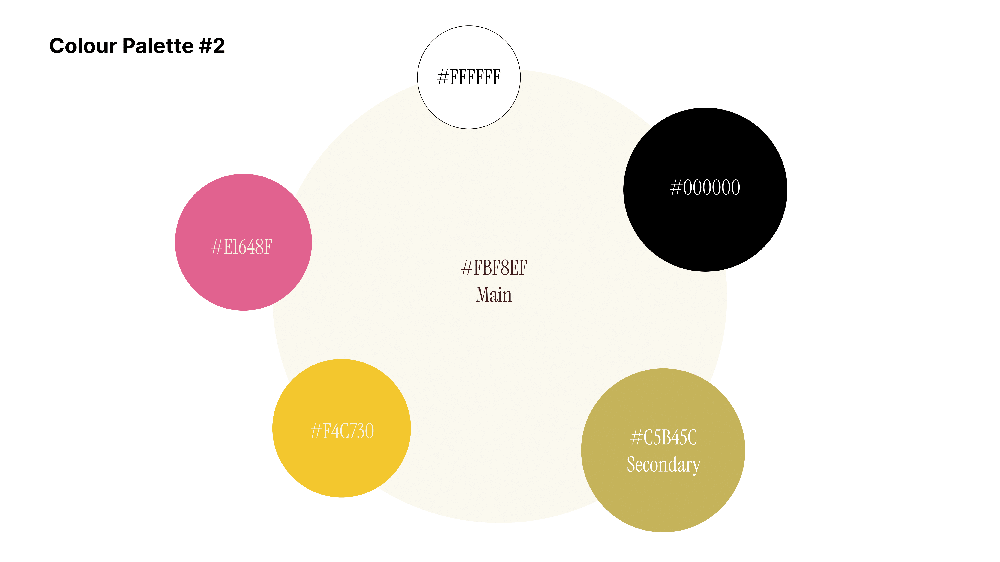
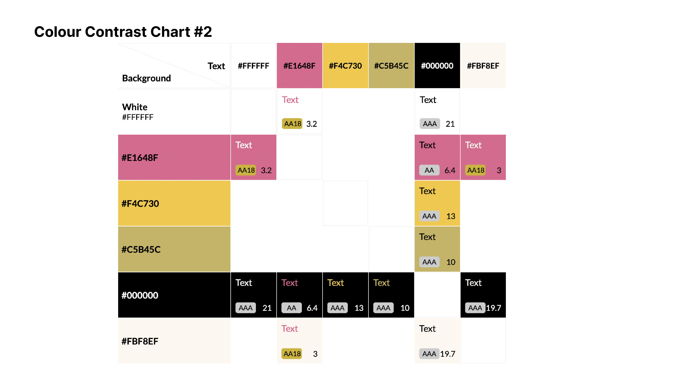

Challenge
The challenge was to select a social enterprise whose mission and branding resonated with me and, based on their existing identity, recreate a website design that reflects their values. The focus was on enhancing usability and accessibility, ensuring the redesigned website was easy to navigate and accessible to a diverse range of users while staying true to the enterprise’s core message and visual identity.
Approach
I analyzed the brand’s existing branding and, from there, identified the changes needed to enhance the website. My focus was on modernizing the overall layout, creating a sleek, dynamic design, and introducing a simplified color palette. To achieve this, I reduced large chunks of text, summarizing content to its key points, and adjusted the layout to be more engaging. I incorporated cool illustrations that captured the brand’s essence, along with up-to-date, eye-catching images to make the site visually appealing and user-friendly.
Art Direction
I began the redesign process by creating a mood board to explore the visual direction, which I then refined to develop the branding, color palette, typography, and wordmark. This helped shape the art direction and set the tone for the entire project.

Colour Accessibility
Ensuring the website is accessible to all users, I checked the color palette through a color accessibility checker to ensure it met the WCAG AA or AAA standards for contrast and readability. By adjusting the colors accordingly, I made sure that text and key elements are legible for users with visual impairments or color blindness, providing an inclusive and seamless experience for a broader audience.
 Wireframes
Taking the ideas from the mood boards and refining them, I created wireframes to turn my design concepts into reality. I focused on ensuring the layout was user-friendly and intuitive, reworking the wireframes multiple times to enhance usability and streamline the user journey. This process allowed me to visualize the structure and functionality of the website, setting the foundation for a cohesive and engaging user experience.
Mock ups
For the high-fidelity mockups, I focused on digging deep into the roots of a craft/art theme, using a small but trendy color palette that is both modern and accessible. To keep the website unique and engaging, I added fun illustrations that reflect the brand’s personality. I also incorporated auto layout into the design, ensuring flexibility and consistency across different screen sizes while maintaining a cohesive, visually appealing user experience.